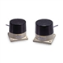
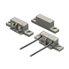
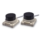
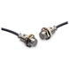
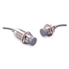

Building Automation
Industrial Automation
Power Automation & Safety


Bangladesh Distributor
Others
Proximity Sensors are also available for special applications in long-distance models, and slim models are available for use combined with Proximity Sensors.
Others List
There are 5 products of Others.
 Ultra-long Sensing-distance Proximity Sensor TL-L
Detection Distance of 100 mm for Both Ferrous and Non-ferrous Substances.
 Magnetic Proximity Sensor GLS
Easy-to-use, Simple Magnetic Proximity Sensor
 Long-distance Proximity Sensor TL-LP / LY
Long-distance Model with a Sensing distance of 50 mm.
 Inductive Coupler F92A
Transmit Limit Switch ON/OFF Signals without Making Contact
 Power Couplers B7AP
Transmits Input Device ON/OFF Signals and Power. The Key to Effortless Wiring for Rotating and Moving Bodies.
Related Contents
- Proximity Sensors